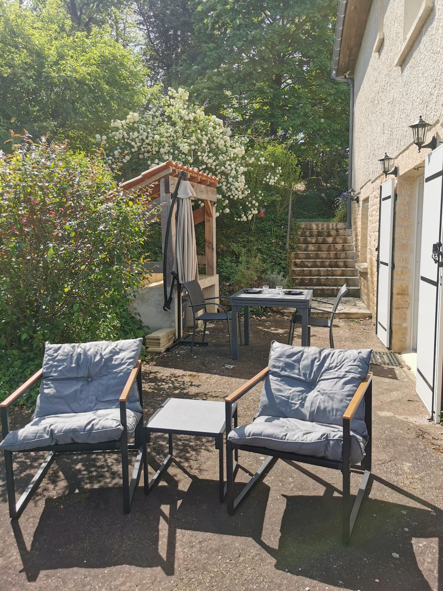

Bienvenue dans notre cocon à la déco londonnienne
À seulement 5 km de Sarlat-la-Canéda, découvrez un appartement unique où le charme londonien rencontre la douceur du Périgord. Une entrée privée, un parking sécurisé, et un espace extérieur avec barbecue vous attendent pour un séjour inoubliable.
Parfait pour les couples ou les voyageurs en quête de tranquillité, notre logement allie confort moderne et ambiance chaleureuse, le tout dans un cadre verdoyant.

Le Logement
2 voyageurs
Confortable pour un couple ou deux amis
1 chambre
Lit double queen size
1 salle de bain
Douche moderne et lavabo
WiFi gratuit
Connexion haut débit incluse
Parking privé
Place réservée devant la maison
Cuisine équipée
Tout pour préparer vos repas
Descriptif complet
Envie de dépaysement ? Notre appartement cosy au décor londonien vous transporte dans une ambiance britannique, le tout dans une maison familiale à seulement 5 km de Sarlat.
- Séjour/cuisine pratique et chaleureux
- Chambre avec lit double confortable
- Salle de bain avec douche et lavabo
- Toilettes séparées
- Espace extérieur privé avec table, chaises et barbecue électrique
- Local à vélos sécurisé

Galerie photo


La Région
Situé à Marcillac-Saint-Quentin, notre logement vous place au cœur du Périgord Noir, l'une des régions les plus pittoresques de France. Entre forêts, châteaux, grottes préhistoriques et villages médiévaux, vous ne manquerez pas d'activités et de paysages à couper le souffle.

Sarlat-la-Canéda
Vieille ville médiévale à 5 minutes

Grottes de Lascaux
Art préhistorique exceptionnel

Château de Castelnaud
Forteresse médiévale impressionnante

La Roque-Gageac
Village troglodytique classé

Rivière Dordogne
Balades en canoë et paysages

Marchés & Gastronomie
Découvrez les spécialités du Périgord
Nos atouts
Top 5% des logements
Classé parmi les meilleurs hébergements Airbnb en fonction des avis et de la fiabilité.
Superhost
Nathalie est une hôte expérimentée, très bien notée, engagée à offrir d'excellents séjours.
Arrivée flexible
Accueil en personne ou arrivée autonome avec boîte à clé sécurisée.
Calme absolu
Situé dans un quartier résidentiel paisible, loin de l'agitation.
Coup de cœur
Nos voyageurs adorent l'ambiance unique de notre logement.
Équipements complets
Tout le confort nécessaire pour un séjour sans souci.
Avis des voyageurs

Marie & Thomas
"Un vrai coup de cœur ! L'appartement est encore plus joli que sur les photos. Le décor britannique est très réussi et l'accueil de Nathalie était parfait. On se sent comme à la maison !"

Sophie
"L'espace extérieur avec le barbecue est un vrai plus ! Nous avons passé des soirées magnifiques. Le logement est très propre et très bien équipé. À recommander sans hésitation !"

Pierre & Claire
"Emplacement idéal pour visiter la région. Proche de Sarlat mais au calme. L'appartement est très cosy et le parking privé est un vrai confort. Merci pour ce séjour !"
Réservez votre séjour
Le cocon de la Londonnerie
Marcillac-Saint-Quentin, Dordogne (24)
Nouvelle-Aquitaine, France
Prêt à réserver ?
Découvrez les disponibilités et réservez directement sur Airbnb pour bénéficier de la garantie Airbnb et des avis vérifiés.
Réserver sur AirbnbVous serez redirigé vers la plateforme Airbnb pour finaliser votre réservation.
Paiement sécurisé et protection Airbnb incluses.

Nathalie
Votre hôte
"Nous aimons accueillir nos voyageurs avec plaisir et bonne humeur ! Thé, café et petits conseils locaux sont toujours disponibles."